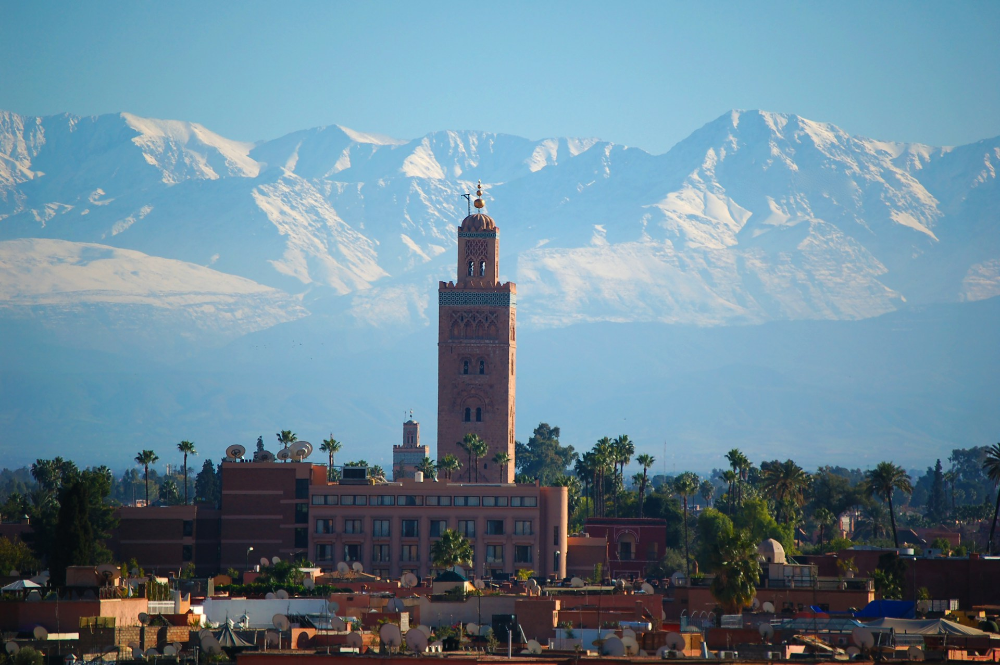

Fes Crafts Guide Historic Center
Discover the authentic charm, historical heritage and unique experiences of Fes Crafts Guide Historic Center.
Welcome to Fes Crafts Guide Historic Center
Fes Crafts Guide Historic Center is a captivating destination offering unforgettable landscapes, historical heritage, and rich cultural experiences in Morocco.